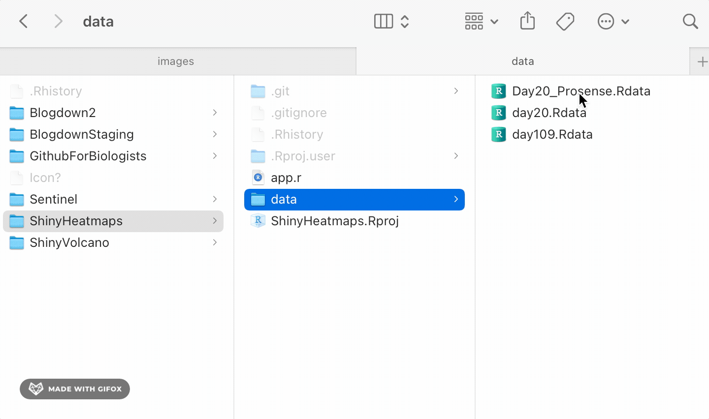
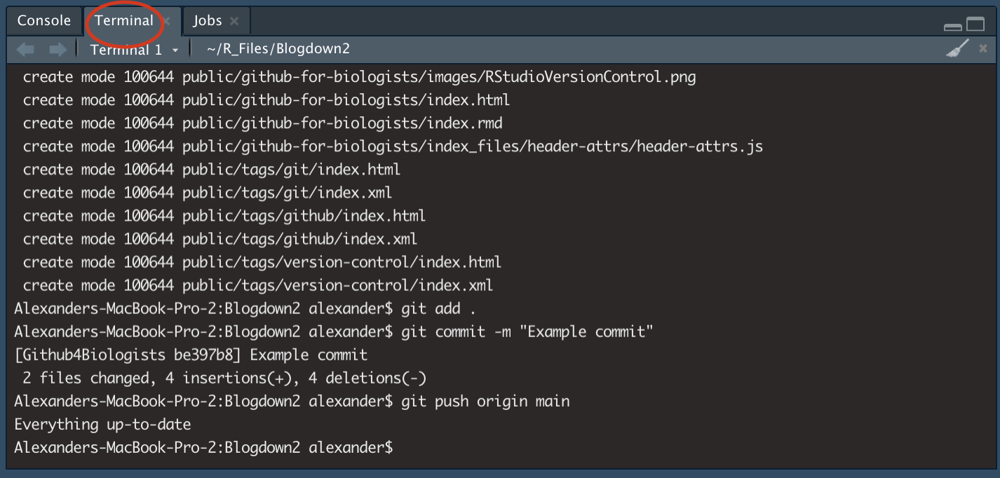

Collaborating using Git/hub and R-Studio
When it comes to coding & data analysis, working with others can be a frustrating proposition. Links to files break when used on different machines, datasets become too large to share, and changes made in the code are impossible to keep straight. Luckily for us, a tool exists to solve (some) of these problems: Git. Git is a version control system. It allows you to take snapshots of your code as it changes over time.
When editing a manuscript in Word, it’s easy to turn on “Track Changes” and save a record of edits, comments, and deletions. Git does the same thing, but for code.
Github is a website that provides an easy way to share changes recorded in Git, allowing collaborators to quickly pull new versions of code using the command line, a GUI, or from within an IDE (e.g., RStudio).
This post is specifically geared towards using Git in combination with R-Studio, but the concepts discussed are broadly relevant.
Terminology
Repository (Repo): A repo is the basic unit of Git. A repo contains all the files associated with a specific project. This could range from the analysis of one dataset to all the code used for an entire publication.
Commit: A Git commit is how you save the current version of the repo. Creating a commit is like hitting the Save button, only with Git, you can easily revert to any previous commit.
Pull: To Pull is to download the latest version of a Git project from a remote repo (e.g., Github)
Push: To Push is to upload your latest version of a Git project to a remote repo (e.g., Github)
Download and Setup
To get started using Git, first download Git for windows. (If you’re on a Mac or Linux machine, you can get it straight from the source.) The default install location is within your user profile, which means you won’t need admin rights to run the installer. So no need to bother the guys over in the IT department.
Once you’ve got the installer running, there’s only one change I would recommend. While the default options are generally fine, there’s been a recent change in naming conventions. The default “branch”, or version, used to be called “master.” However, now “main” is the preferred nomenclature. You will have to manually make the switch while running through the installer (shown below)

Outside of that, the recommended settings are your best bet.
Creating a New Project in R/Studio
Now that Git’s installed, you can see how it works with RStudio. Let’s start by creating a new R Project from a Github repo. In RStudio, navigate to the ‘File’ menu and select ‘New Project’. When asked what kind of project you’d like to create, select version control.
Select ‘Git’, then paste the following link into the ‘Repository URL’ field: https://github.com/Alexander-Sol/GithubForBiologists
You should now be looking at a brand-new project! It contains a Readme, an .Rdata file, and a quick tutorial script that describes the Rdata file format and its use cases. Congratulations, you’ve just cloned your first Github repo! Welcome to the club.
Creating a Github Account
While you don’t need a github account to clone someone else’s repo, you’ll need an account if you want to upload your own code. To sign up for a Github account, simply go to github.com/signup. Github started as an open source project but was acquired by Microsoft in 2018. So it’s definitely above board.
Once your Github account has been created, there’s a couple of hoops you need to jump through. To access Github from the command line or from within RStudio, you’ll have to store your Github login information locally. However, instead of using your password, you’ll need to store a Personal Access Token, or PAT.
You won’t be asked to enter your login details until step 5, below, so make sure you save your new PAT until then.
A Repo of Your Very Own
To start your own version controlled project in R, the standard work flow is as follows:
- Create a new repository on Github
- Create a new version-control project in R linked to the empty repository
- Add relevant scripts, data, ect.
- Commit your files
- Push to your remote repository
If you have existing R projects that you’d like to upload to Github, you should check out RStudio’s official guide. That being said, linking a new project to an empty repo is the easiest approach. Once you’ve created a brand new project, it’s easy to add scripts, data, and folders, commit your changes, and push the updated project to your remote repo. The remainder of the project will walk you through this process.
Step 1: The Repo
It’s easy to create a new repo on github. Sign in to your account, go to github.com, and click “New Repo”.
Make sure you choose a memorable name for your new repo.
Step 2: Create a New R Project
Now that you’ve created your own project, just follow the steps outlined above Creating a New Project in R/Studio
Step 3: Drag and Drop the relevant files
Now that you’ve opened your new project, it’s time to begin fleshing it out. You can do this by writing new scripts, or by copying existing files into the project folder.

Step 4: Initial Commit
Saving changes via git is a two step process. First, you have to specify which files should be saved. This is called “Staging”. Then, you have to actually save the staged files. This is done with a “Commit”.
While RStudio has a GUI (graphical user interface) that you can use to control the Git workflow, I do most of my work from the command line. Luckily, you can access the command line from withing RStudio. The terminal can be found in the lower left of RStudio. Tabbing over will replace the standard R console with the command line.

Once you have the terminal pulled up, we can add all files in the project directory and commit them with two commands
git add . # The '.' indicates that every file in the directory should be staged
git commit -m "Initial commit"When committing, it’s important to add a message to help you remember what each commit entails. That way, you’ll be able to retrace your steps, should you need revert to previous versions of your code. For the first commit in a new repository, “Initial commit” is the customary message.
Step 5: Push to Github
Now that the changes have been saved, it’s time to push your changes to Github so that your collaborators can see what you’ve done. This is also done from the terminal.
git push -u origin mainAt this point, you’ll be asked to enter your email address and PAT. Once you’ve given your credentials, you should be good to go! If you want, you can check your repo on Github, via a browser, to confirm your new files have been uploaded.
Caveats, Disclaimers & Erratum
Git is widely used and this guide barely scratches the surface of what it can do. Hundreds of thousands of words have been written explaining the best way to use Git, and the whole lot of them are only a google search away.I’ll only recommend one here: The R class’s introduction to Git. That guide touches on RStudio’s Git GUI, which some might find easier/less intimidating.
It’s also important to note that Github has an upper limit on file size: 100 MB. You can’t push files larger than 1/10th of a GB, and it’s recommended that total repo size is kept under 1 GB. This means that scRNA-seq data can’t be shared via Github. However, I’d still recommend keeping your .rds files in the project directory. Just add these files to your .gitignore, as shown in the GithubForBiologists example repo.
I’m currently working on a way to share processed scRNA-seq datasets via Slate Project, one of IU’s supercomputing resources. Keep an eye out for my next post, which will go over this process in detail. In the meantime, be sure to sign up for a Slate account.